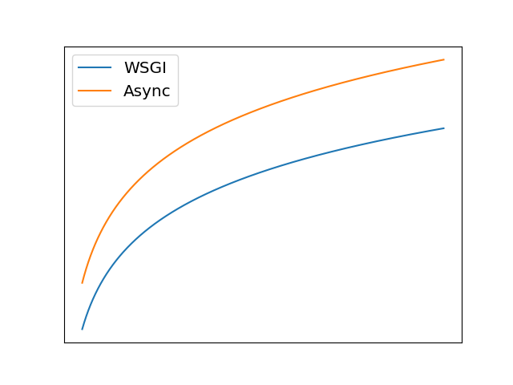
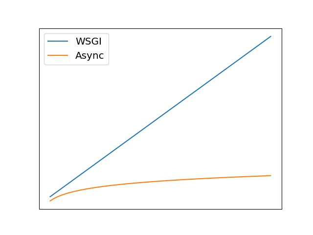

Async web servers
Why do you need them?
Andrew Svetlov
http://asvetlov.blogspot.com
andrew.svetlov@gmail.com
http://asvetlov.github.io/aiohttp-puerto-rico-2017/
Bio
- Using Python 17+ years
- Python Core Developer since 2012
- asyncio committer
- aiohttp maintainer
- Author of a dozen libraries under aio-libs umbrella
Why?
- It's cool!!!
- Invented here (I'm an author)
- Websockets out-of-the-box
- ...
Interactivity
- Regular HTTP requests
-
https://example.com:8080
Django app - Websockets
-
wss://example.com:8081
Tornado server
Memory saving
WSGI
- 1 process
- 500 Mb
- 20 RPS
- 7% CPU
IO waiting (DB access etc.)
WSGI * 10
- 10 processes
- 5 GB (500 Mb * 10)
- 200 RPS
- 70% CPU
Async
- 500 Mb
- 200 RPS
- 70% CPU usage
Slow requests
Normal request
- Web App: 50 ms
- NGINX: 50 ms
- Browser: 0.1 sec
Slowdown
- 1% requests with 1 sec latency
- NGINX: 10 sec
Total Failure
- 0.01% requests with 1 min latency
- NGINX: 5-15 minutes
Concurrent execution
Naive approach
async def handler(request):
value1 = await get_part1(request)
value2 = await get_part2(request)
return render_response(value1, value2)
Explicit concurrency
async def handler(request):
value1, value2 = await asyncio.gather(get_part1(request),
get_part2(request))
return render_response(value1, value2)
Hidden concurrency
Good async client supports pipelining
Timeouts
with asyncio_timeout.timeout(10):
async with session.get(url) as response:
assert response.status == 200
return await response.read()
Performance
No IO
IO bound
Drawbacks

Async code
from aiohttp import web
from . import db
async def handler(request):
name = request.match_info.get('name', "Anonymous")
async with request.app['db'] as conn:
await conn.execute(
db.visitors.insert(name=name,
when=datetime.utcnow()))
return web.Response(text="Hello, "+name)
app = web.Application()
app.router.add_get('/', handler)
app.router.add_get('/{name}', handler)
web.run_app(app)
Missings
- ORM
- Batteries
Questions?
Andrew Svetlov
http://asvetlov.blogspot.com
andrew.svetlov@gmail.com
http://asvetlov.github.io/aiohttp-puerto-rico-2017/